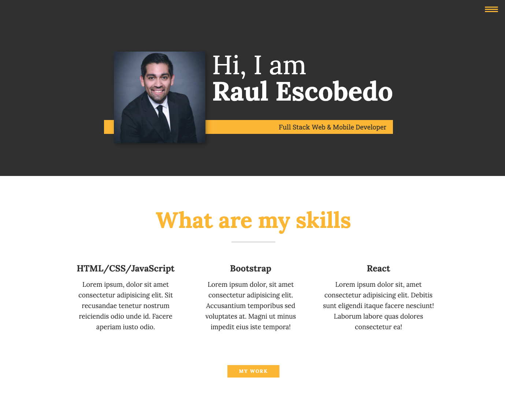

My Portfolio Site
My portfolio is used to showcase my work, education, skills, and a way to get to know me. Like all of my websites, I have a 'mobile first' approach. I feel it is important for the client or customer to have a positive experience with my inclusion of a few 'wow' factors and an easy navigation of the page.
HTML and custom CSS were primarily used to create the layout of this website. I enjoyed building the different sections to showcase my skills, projects, education, and myself. The biggest hurdle while building this was to not rely on Bootstrap's prebuilt components, JavaScript plugins, and their style selections. Everything is customized from the buttons, navigation, the 'My Work' effects, and more.